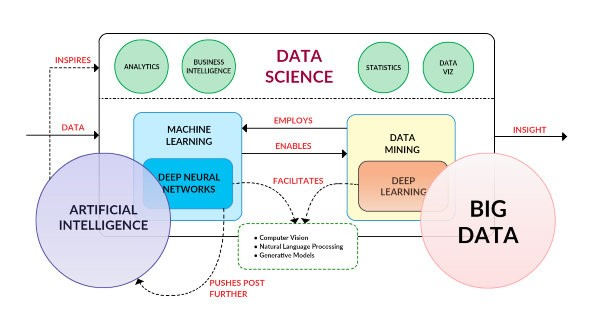
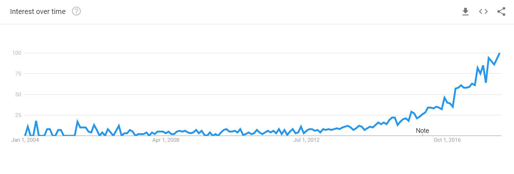
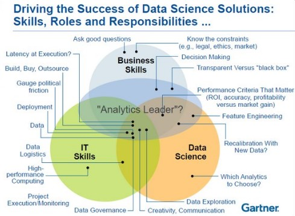

Some people might remember that in 2006, there was no such a thing as Data Science. People were either called data miners, or experts in intelligent systems. The projects being done were mostly on text analytics, data classification, image recognition and robotic without the label 'data science'.
In 2012 the word 'data science' started appearing. Data-miners did a great job at the time in finding correlations and classification of data. Businesses started to understand the value data-mining and machine learning could bring. Therefore, the job-title data science started to become fashionable. In below you can see the trend of word 'data science' presented by Google.

At the early 2013, two kinds of people were doing Data Science : (1) people with some academic background to do the machine learning, statistical analysis and data mining (2) hands-on IT experts who were trying to glue some technologies and making sense of data.
The problem with the first group was they mostly haven't studies IT. So, the world of IT was alien to them. They didn't know the databases, web services, etc. And the problem with the second group was their theoretical foundations on data mining and statistical analysis were poor. Easy concepts like neural networks was pretty difficult for them. In 2013-2016 the first group were more popular. They were hired easier and could get better projects.
You could be asking yourself, what is this Data Science exactly?
There is no dearth of articles around the web comparing and contrasting data science terminology without really understanding the deep meanings. There are all sorts of articles written by all types of people relaying their opinions to anyone who will listen. It's almost overwhelming.
Data Science is a very inter-disciplinary Science, and thus we shall define it through its sub-fields.
One of those important subfields is machine learning. Machine learning is "concerned with the question of how to construct computer programs that automatically improve with experience." Machine learning is interdisciplinary in nature, and employs techniques from the fields of computer science, statistics, and artificial intelligence, among others. The main artifacts of machine learning research are algorithms which facilitate this automatic improvement from experience, algorithms which can be applied in a variety of diverse fields.
I don't think there is anyone who would doubt that machine learning is a central aspect of data science. I give the term data science detailed treatment below, but if you consider that at a very high level its goal is to extract insight from data, machine learning is the engine which allows this process to be automated. Machine learning has a lot in common with classical statistics, in that it uses samples to infer and make generalizations. Where statistics has more of a focus on the descriptive (though it can, by extrapolation, be predictive), machine learning has very little concern with the descriptive, and employs it only as an intermediate step in order to be able to make predictions. Machine learning is often thought to be synonymous with pattern recognition; while that really won't get much disagreement from me, I believe that the term pattern recognition implies a much less sophisticated and more simplistic set of processes than machine learning actually is, which is why I tend to shy away from it.
Machine learning is often confused with Data Mining. There might be a deep relationship between the two, but it’s a bit different than that.
Data mining is "the application of specific algorithms for extracting patterns from data." This demonstrates that, in data mining, the emphasis is on the application of algorithms, as opposed to on the algorithms themselves. We can define the relationship between machine learning and data mining as follows: data mining is a process, during which machine learning algorithms are utilized as tools to extract potentially-valuable patterns held within datasets.
As for Deep Learning? Deep learning is a relatively new term, although it has existed prior to the dramatic uptick in online searches of late. Enjoying a surge in research and industry, due mainly to its incredible successes in a number of different areas, deep learning is the process of applying deep neural network technologies - that is, neural network architectures with multiple hidden layers - to solve problems. Deep learning is a process, like data mining, which employs deep neural network architectures, which are particular types of machine learning algorithms.
When you see all of these, you think this isn’t Data Science, but Artificial Intelligence. That isn’t exactly right.
AI is a yardstick, a moving target, an unattainable goal. Whenever we get on a path toward AI achievements, somehow these accomplishments seem to morph into being referred to as something else. If you asked an AI researcher in the 1960s what their idea of AI was, they would probably agree that a small device that fit in our pockets, which could help anticipate our next moves and desires, and had the entirety of human knowledge readily available at will, there would probably be consensus that said device was true AI. But we all carry smartphones today, a very few of us would refer to them as artificial intelligence.
AI is a concept that is always evolving in order to have a goal to pursue through Data Science. It is an inspiration as well as a motivation.
From all these subfields, we can get a fuzzy grasp on what is the Data Science puzzle. It is extracting correlations in Data to achieve multiple goals. We can see the puzzle of Data science between 2013 and 2016 this way : 
Since 2017 the game was changed with popularity of Hadoop-based data analytics and cloud computing. The infrastructure has become more important that ever. Next to the data scientists, who were turning data into actionable insights, there should be a platform expert who makes the platform ready and fixes the bugs. Here was the term "data engineer" appearing more often. Data engineering simply refers to the IT experts with experience on big-data platforms. A good data-engineer has a good mastery on Linux, networking, big-data-related software and knowledge of cloud as a big plus. In below picture you can see the trend of word "data engineer" according to Google. As you can see the hype of word 'data-engineer' is happening later than 'data-science'.

According to Gartner a good data scientist has three major skill-set. (1) IT (2) core data science such as data-mining, and (3) business skills.

Finding these people is a difficult challenge. The current data scientists have 1 or 2 of these skills. For example data scientists with background in statistics, they are good in data science skills and modeling but they usually do not know IT terms in their deep meanings (such as web-services, agile and scrum, object oriented programming / modeling for code-share and team-work) and they are also most probably lacking of the business skills. You would also see Data Engineers or Data Scientists skilled in the IT field, but very lacking in Statistics or the business Skills.